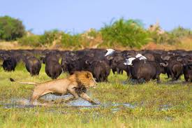
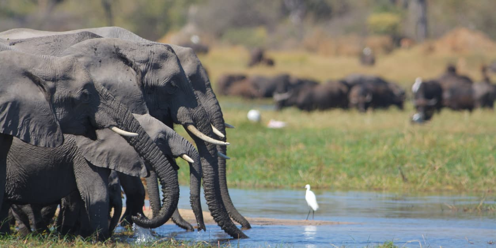
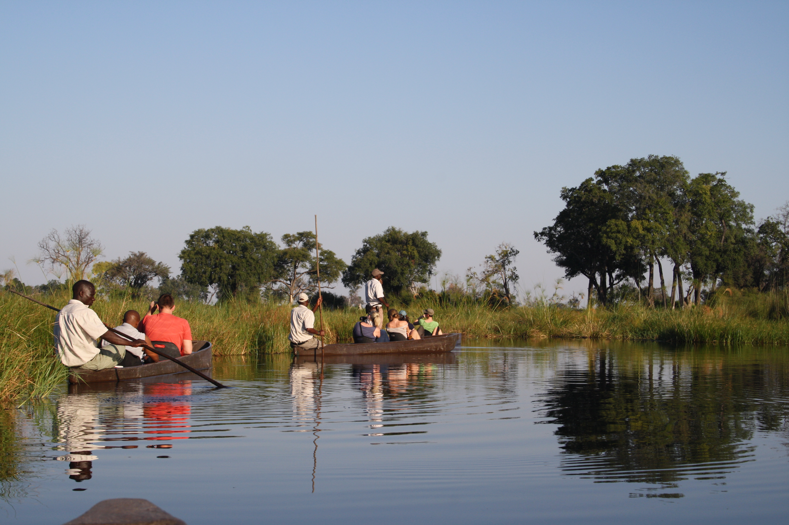
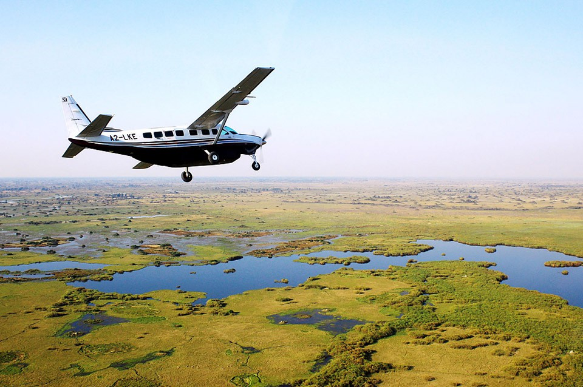

The Okavango Delta Safari in Botswana
Again standing in the top 3 best safari parks in the world is the Okavango Delta in Botswana for its sheer diversity of wildlife found in the Southern parts of Africa. The Okavango Delta is home to many wildlife animals not limited to lions, leopard, African bush elephants, rhinoceros. I have always loved nature and what best way is there to enjoy that - a safari - from my research there is so much to enjoy on this trip.




Such as .....
- Viewing the Worlds most endangered species
- The beautiful complex of the ecosystem
- The experience of flying in over the delta
- Viewing from simple dugout canoes
- Exploring on foot or horseback
- Moreover enjoying the culture and history
The list could go on .....
Watch the video for a Heaven on Earth Vitual experience